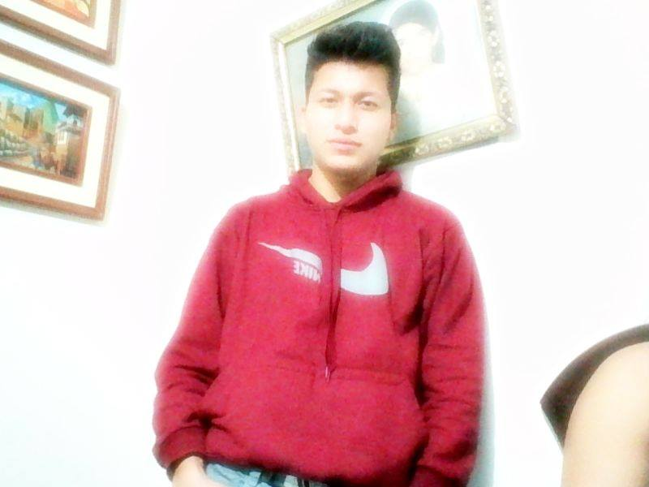

Domador Criollo David
21 años
PERFIL
Más allá de haber asimilado eficientemente las competencias técnicas o duras gracias a la malla curricular, he logrado desarrollar competencias blandas (trabajo en equipo, adaptación al cambio, resolución de problemas, tolerancia a la presión, liderazgo, comunicación oral y escrita, empatía, entre otros) las cuales busco fortalecer y enriquecer en el campo laboral. Por ello, me considero un semi-profesional competente y capaz.
CONTACTO
Telefono : 937545403
Correo : dc.23David@gmail.com
Direccion: calle 6 de julio
facebook: David Domador
INFORMATICA
- Excel intermedio
- Word intermedio
- Power point intermedio